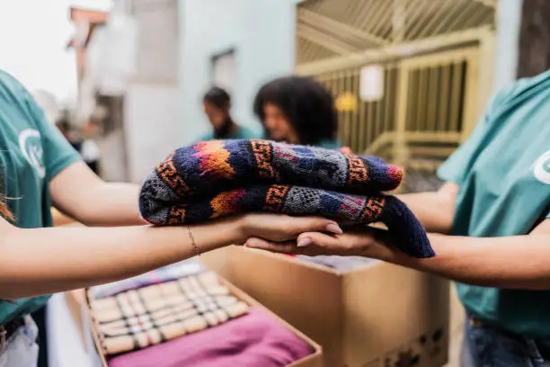

Breaking the Cycle of Homelessness
Usually, being homeless means more than just not having a place to live. It is frequently connected to systemic poverty, addiction, mental health issues, family dissolution, and unemployment.
Addressing these underlying issues with long-term fixes is necessary to break the cycle.
Many people who are homeless also deal with health issues or trauma. Providing healthcare and counseling guarantees a comprehensive and long-lasting recovery.
One organization cannot address homelessness. Through partnerships, campaigning, volunteerism, and the creation of welcoming environments where everyone feels included, communities play a critical role.
Volunteer Spotlight: Thando's Story
Meet one of our inspiring volunteers who dedicates weekends to serving meals and mentoring the youth:
Every Saturday morning, while most of the city is still waking up, Thandi arrives at the shelter with a smile and sleeves rolled up, ready to serve.For the past two years, she has dedicated her weekends to preparing warm meals, sorting clothing donations, and mentoring young people who come through our doors.
Thandi says volunteering is her way of “giving back the hope I was once given.” Her quiet commitment reminds us that real change does not come from grand gestures alone, but from consistent acts of compassion that ripple through lives and communities.
Volunteer Spotlight: Sipho's Story
Sipho spends his weekday afternoons at the shelter, assisting youngsters with their homework and conducting skill-building sessions for job-seeking adults, while many people race through the workweek. "A few hours of encouragement can spark a lifetime of change," he says.
He has become a mentor to many because of his patience and consistent presence, demonstrating that volunteering during the week may have an as significant influence as serving on the weekends.
Sipho's commitment demonstrates how compassion may illuminate the way to a better future when it is continuously shown.
Volunteer Spotlight: Emily's Story
Heroes aren't always on the front lines. During the week, Emily works behind the scenes, assisting with administrative duties, planning fundraising activities, and handling donor correspondence. The impact of her work is felt in every meal provided and every family helped, even if it is frequently invisible.
"Even though I'm not at the shelter all the time, every spreadsheet and phone call helps someone find a safe place to sleep," Emily adds. Her experience serves as a reminder that any ability, no matter how modest, can be an effective tool for compassion.
5 Ways to Support Families in Crisis

Practical ways you can make a difference:
- Donate Essentials: Contribute food, clothing, or hygiene items to help meet immediate needs.
- Volunteer your time: Offer your skills whether it's serving meals, tutoring children, or providing professional expertise.
- Support Fundraising Campaigns: Attend events, join drives, or host your own mini-fundraiser to help sustain vital services.
- Spread Awareness: Share stories, posts, and information with your community to break the stigma around homelessness.
- Offer Opportunities: If you own a business or have connections, create pathways for employment, training, or mentorship.